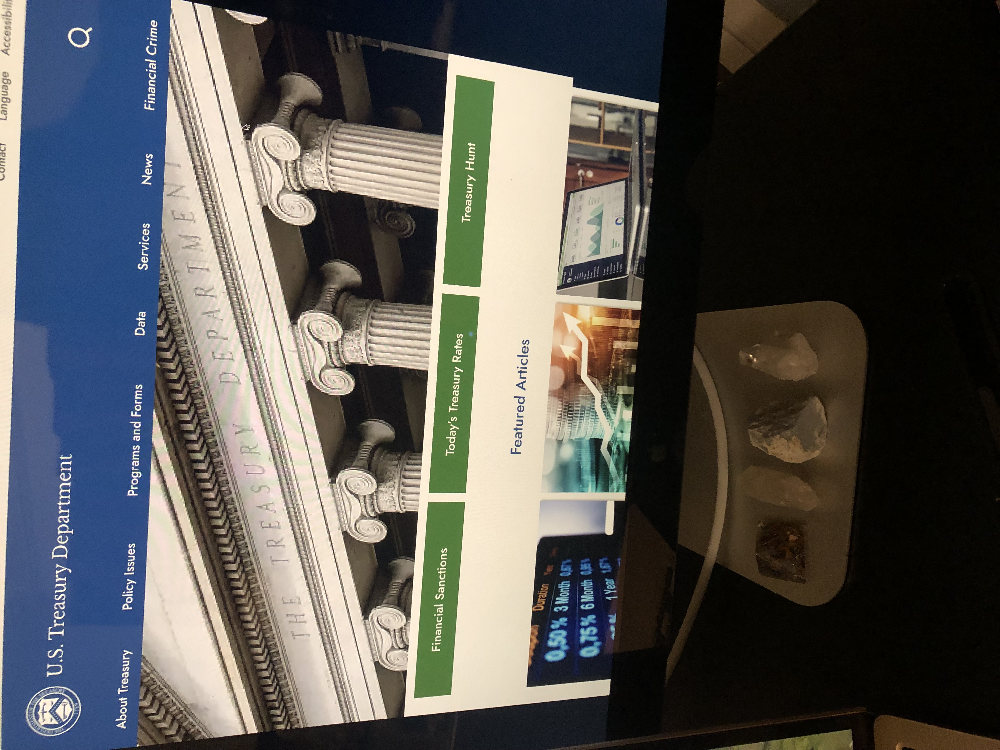
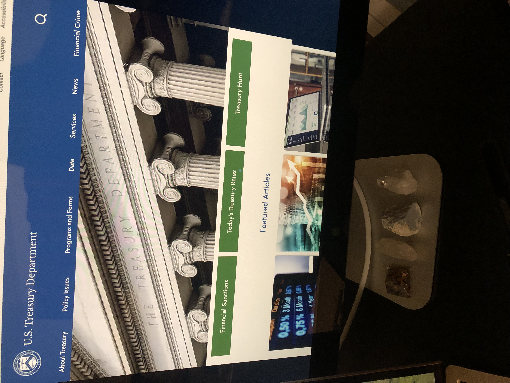

Hi, I am
Carol Corchero
UX/UI Designer and Researcher
UX/UI Designer and Researcher
"I am a focused UX/UI Designer, with an intuitive eye that knows how to blend engaging aesthetics with functionality. At my core, I identify as a creative artist. Apart from designing, I'm also involved in teaching music, writing, storytelling, painting and previously produced and hosted a ghost story podcast. My interests span solving puzzles and delving into psychology, including hypnotherapy and neurolinguistic programming, in which I hold a master certification. My strength is in brainstorming, user research and problem solving. My career transition to UX/UI from a background in the mortgage industry has given me an aptitude for great attention to detail, crossfunctional teamwork, presentations, as well as creating marketing campaigns. I understand the psychology of the user and strive to make technology more enjoyable.


A non-profit website redesign to more accurately represent K Space Contemporary Gallery, which will allow their educational programs to flourish, compel companies and individuals to donate to the gallery, and to grow and maintain their cultural impact on their Corpus Christi Community.
In this project, I present “Growver” a smartphone application that solves some of the major concerns faced by plant lovers who need to hire someone to take care of their indoor plants when they are away from home.
 

My design project was to create an easier navigating experience for users for both mobile and desktop platforms. The confusing hierarchy of topics and walls of text were discouraging people from using the site. We aimed to make the website more visually appealing.